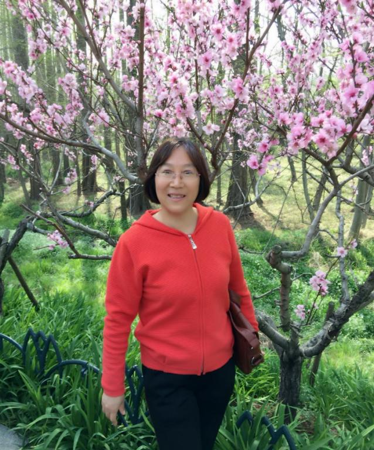
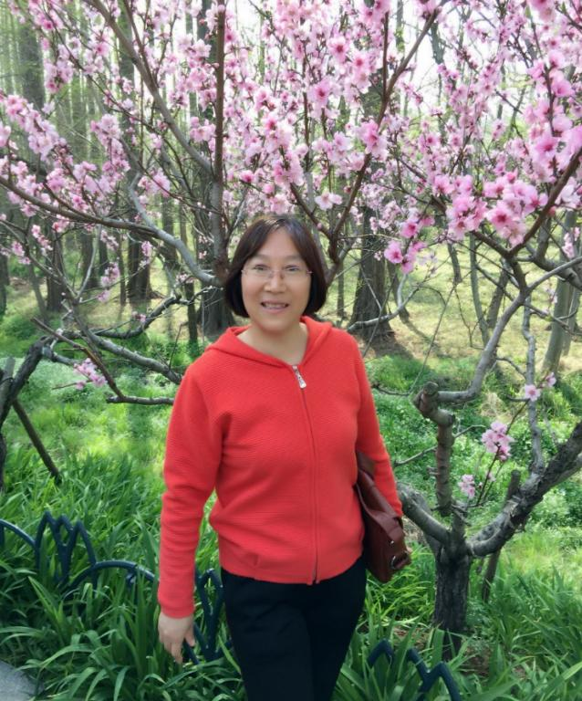

王德华
教授，硕士生导师
鲁东大学物理与光电工程学院
通讯地址： 山东省烟台市芝罘区红旗中路186号, 鲁东大学物理与光电工程学院
邮编：264025
E-mail: lduwdh@163.com;jnwdh@sohu.com
Homepage: http://www.physics.ldu.edu.cn/info/1064/1946.htm
个人简介
王德华教授，博士，鲁东大学原子与分子物理专业硕士生导师，全国优秀教师。国家自然科学基金和山东省自然科学基金通讯评议专家、教育部长江学者特聘教授评审专家，《Physical Review A》、《Journal of Physics B》、《中国物理》、《中国物理快报》等国内外权威刊物的评审专家。
教育经历
1. 1990.9 ~ 1994.7：山东师范大学物理系学习，获得理学学士学位；
2. 1994.9 ~ 1997.7：山东师范大学物理系原子与分子物理专业学习，获得理学硕士学位；
3. 2002.9 ~ 2005.7：山东大学物理学院原子与分子物理专业学习，获得理学博士学位。
工作经历
1. 1997.9 ~ 2005.7：山东建筑大学理学院从事教学与科学研究;
2. 2005.8 ~ 至今：鲁东大学物理与光电工程学院从事教学与科学研究。
研究领域
1.原子分子与强场的相互作用
2.表面附近原子分子的动力学性质研究
3.量子混沌
完成或承担研究课题
1.强场中高激发态原子、分子光电离显微的研究(11374133), 基金来源：国家自然科学基金；资助金额：76万。起止年限：2014.01-2017.12.
2.表面附近原子和离子的动力学性质研究，基金来源：国家自然科学基金；资助金额：32万。起止年限：2011.01-2013.12.
3.里德堡分子在强场中回归谱的理论研究（No.10604045）；基金来源：国家自然科学基金；资助金额：18万。起止年限：2007.01-2009.12.
4.含时外场驱动下负离子光剥离的动力学研究（No.ZR2019MA1066）；基金来源：山东省自然科学基金；资助金额：20万。起止年限：2019.07-2022.06.
5.高激发态原子在任意夹角的强电场和磁场中的光电离，基金来源：山东高校科技计划项目；资助金额： 5万；起止年限：2013.07-2016.7
6.里德堡原子在金属面附近的混沌动力学性质研究（No.J09LA02）；基金来源：山东高校科技计划项目；资助金额： 5万；起止年限：2009.07-2012.7。
主讲课程
1. 研究生课程：《高等量子力学》、《强场物理》、《专业文献检索》
2. 本科生课程：《普通物理》、《材料力学》、《物理学史》
获奖情况
1.2015年获得山东省自然科学二等奖1项；
2.2015年获得山东省青年科技奖1项；
3.2018年获得山东省高等学校科学技术三等奖一项；
4. 2017年获得山东省高等学校科学技术二等奖一项；
5. 2015年获得山东省高等学校优秀科研成果二等奖一项；
6. 2014年获得山东省高等学校优秀科研成果一等奖一项；
7. 2013年获得山东省高等学校优秀科研成果一等奖一项；
8. 2012年获得山东省高等学校优秀科研成果一等奖一项；
9. 2011年获得山东省高等学校优秀科研成果一等奖一项；
10. 2010年获得山东省自然科学一等奖一项。
代表性论文
(1) Dehua Wang, Photodetachment of the H− ion in a quantum well with one expanding wall, Phys. Rev. A, 98 : 053419 (2018).
(2) Dehua Wang,Qinfeng Xu, Xiaoguang Ma, Photodetachment of hydrogen negative ions in bichromatic oscillating electric fields, Phys. Rev. A,95:043410 (2017).
(3) Dehua Wang，Xinye Sun, and Tong Shi，Photodetachment dynamics of negative ion near a moving surface，Eur. Phys. J. D,73：15(2019).
(4) Dehua Wang，Zhaohang Chen，Shaohao Cheng，Photodetachment of the H- ion in a linear time-dependent electric field, J. Phys. B: At. Mol. Opt. Phys.49:205001(2016).
(5) Dehua Wang，Shaohao Cheng，Zhaohang Chen，Photoionization of Rydberg hydrogen atom in a magnetic field，J. Electron. Spectrosc.,202：62 (2015).
(6) Dehua Wang，Interference of the photodetached electron waves propagating in perpendicular electric and magnetic fields，J. Electron. Wave. 28：861 (2014).
(7) Dehua Wang.Photodetachment of H- ion Inhomogeneous Electric and Magnetic Fields, J. Phys.Soc. Jpn., 82: 064301(2013)
(8) Dehua Wang,Shaosheng Li, and Haifeng Mu Photodetachment of H- near a Metallic Nanosphere Surface. J. Phys.Soc. Jpn. 81: 074301(2012)
(9) Tian-tian Tang and Dehua Wang.Photodetachment Microscopy of H- in the Magnetic Field near a Metal Surface. J. Phys. Chem. C, 115 (2011).
(10)Kaiyun Huang, Dehua Wang, Photodetachment of H- in A Metallic Microcavity, J. Phys. Chem. C.,114:8958 (2010).
(11) Dehua Wang, Kaiyun Huang and Shenglu Lin, Semiclassical calculation of ionization rate for Rydberg hydrogen atoms near a metal surface, Eur. Phys. J. D 54: 699 (2009).
(12)Dehua Wang, Qiang Xu, Chuanlu Yang, Meishan Wang. The Recurrence Spectra of Rydberg HeH+ Molecule Ion in a Magnetic Field. J. Chem. Phys. 129: 104310(2008).
(13) Dehua Wang, M L Du and Shenglu Lin. Application of closed-orbit theory to the Rydberg hydrogen atom near a metal surface, J. Phys. B: At. Mol. Opt. Phys. 39: 3529(2006).
(14)Dehua Wang and Shiliang Ding . Alternative model potential for the semiclassical calculation of the recurrence spectra of the Rydberg molecule in strong external fields. Phys. Rev. A, 71:013420(2005).
(15)Dehua Wang and Shiliang Ding, Recurrence spectra of a helium atom in parallel electric and magnetic fields. Phys. Rev. A ,68:023405(2003).
Last Updated: Aug. 8, 2019